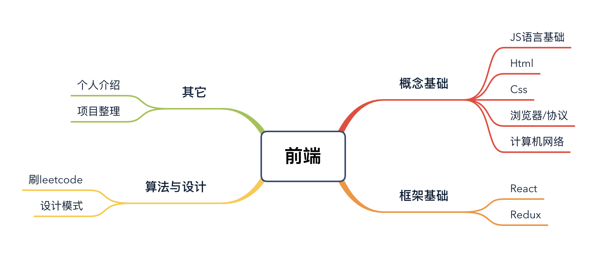

实习准备计划
为什么要做这个计划
又到了每年春招的时间。然而后知后觉的我，一直等到2月底的时候，才开始准备。这时候发现周围好多同学都早早就投递了简历_(:з」∠)__。本着进不了也要试一试的心态，我在没怎么准备情况下就投了tx的前端实习生岗，想着自己也做过几个小项目，还是可以说一点的。emmm，然而果不其然被刷掉了，像跨域之类的问题，因为自己平时都是用的proxy、照着readme弄过一两次cors的样子😂，所以根本答不上来什么呀。还有一题，问我list的含义（事后回想应该是问的this），于是瞎答一通，还被嘲讽js基础都不知道为啥面前端。。。😢
因此呢，为了能系统地巩固Web前端的知识（下次能答出更多的问题），现在决定开始复习啦！
我会将复习的过程记录在这个博客里，一方面是监督自己，一方面也是记录一下心得，分享一下经验吧。。
如果有什么意见或者建议的话，请务必评论哈！谢谢！
几个方向
我计划从以下几个方向开始复习，每个部分，都会有对应的文章博客来记录整理知识点。这就当是个目录吧！
- 概念基础
- JS语言基础
- Html/CSS基础
- 浏览器/协议安全
- 计算机网络
- 框架基础
- React
- Redux
- 算法与设计
- 刷leetcode吧
- 设计模式
- 其它
- 个人介绍
- 项目整理
脑图

一些想法
怎么说呢，虽然很多人急于找实习、找工作，但是我还是更希望能够更加平稳的舒服地去学习新的知识。所以我暂时不会去投很多的简历，可能是精力不够吧，我觉得编程应该是一个慢慢来的、像画画一样的活动，可以停下来，出去走走，晒晒太阳，思考一下我想做出什么，思考一下现在做了些什么。而不是扎在电脑前，固执于某个方法，或者为了快速拿出成果而不眠不休。
这当然不是说，坚持是不好的。而是在坚持前，应该问自己几个问题：
- 我为什么在做这个事情
- 这个有必要吗
- 有没有更好的办法
看面经、刷面试题、刷框架基础知识，固然效果显著，但我想慢慢来，慢慢学习基础，并在实践中巩固。
春天的白玉兰开了，不去看看嘛？
Q&A
目录会更新吗？
这个当然。就跟迭代开发一样嘛，后续如果发现有疏漏的点，或者可以有更加清晰的知识体系，都会在此更新。
这个博客会一直更新下去吗？
会的！最近为了准备实习，看了许多同龄人的博客，觉得非常有意思，所以会把平时的学到的知识或者想法分享到这里，不只是记录下准备的过程。
目标的企业是？
这个先不说了QWQ，(其实也没大考虑好)